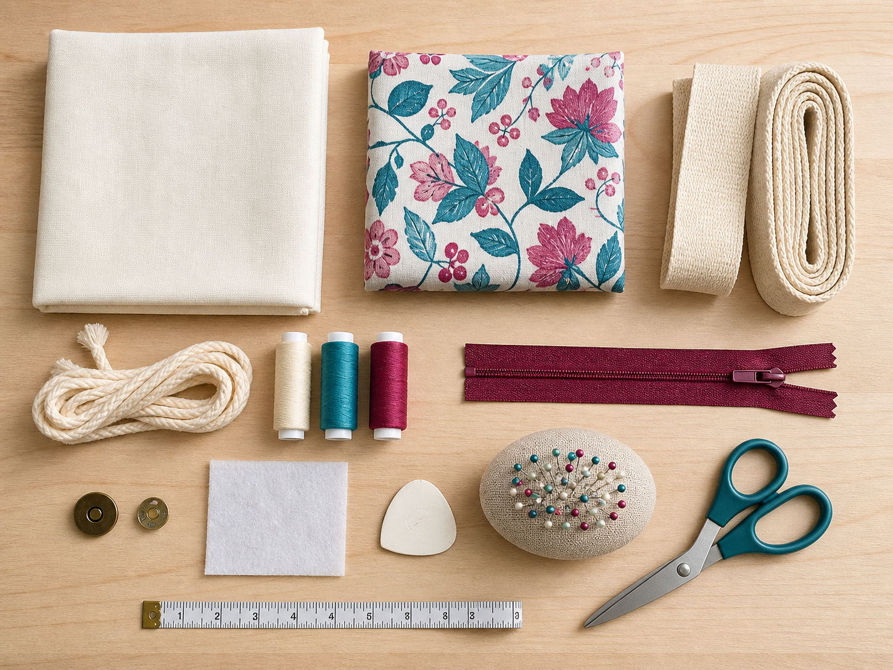

Section 1
Selecting Materials, Notions and Equipment
Learning purpose: Help students justify resources by matching their properties and roles to the intended bag, user and production process.
Production planning begins by deciding what each resource must do, not by collecting whatever happens to be nearby.
Materials form the main parts of a product. A bag material may need to hold a load, cope with repeated handling, accept the planned decoration and suit the intended appearance. A good choice is therefore connected to the user and function rather than based on colour alone.
Notions are smaller components that help a textile product work or come together. Straps, cord, fasteners and thread are examples of possible notions. Each notion needs a clear job, and its strength, size and compatibility should suit the rest of the design.
Equipment is selected for the process it performs. Measuring, marking, cutting, joining, pressing and checking require different tools. Planning the equipment in advance helps a student arrange the work safely and avoids stopping halfway through a process because an essential tool was overlooked.
A justified materials list explains the link between a resource and a design need. It can compare function, durability, appearance, comfort, ethical considerations and environmental impact. The strongest explanation uses relevant evidence and acknowledges a trade-off instead of claiming that one resource is perfect in every way.
Key vocabulary
- material
- A substance used to make a main part of the product.
- notion
- A smaller textile component, such as thread, a strap, cord or a fastener.
- fit for purpose
- Suitable for the intended user, function and conditions of use.
- trade-off
- A balance in which improving one feature may reduce another.
Justifying a resource without guessing a requirement
- State the design need: the carry item must be comfortable to handle and durable enough for repeated use.
- Name the role of the resource: the chosen strap material will carry the load and connect the bag to the user.
- Compare relevant properties such as strength, feel, appearance, likely life and environmental impact.
- Write a reasoned choice that links the evidence to the need and notes any trade-off that still has to be managed.
Conclusion: The decision is justified because it explains why the resource suits the design, not merely which resource the student prefers.
Ideas to challenge
- The most attractive material is automatically the best material for every bag.
- A materials list only needs names and quantities, so reasons for choices do not matter.
- Tools, notions and materials are interchangeable words.
Match the job
Identify the user or product need first, then choose the property that helps the resource perform that job.
Separate resource types
Materials form major parts, notions are smaller components, and equipment performs a process.
Build a justification
Use a need, relevant evidence, a comparison and a reasoned conclusion; include a real trade-off when one exists.

Complete non-video pathway
Resource decision lab
Comparing two locally possible resources against the same need and properties teaches the exact justified-selection process.
Before
- Read the adjacent resource-role explanation and inspect the selection-pathway visual.
- Choose one product need and two teacher-approved possible resources.
During
- List two resource properties that matter to the chosen need.
- Compare the two possible resources using the same properties so the comparison is fair.
- Write a short decision that names the better fit, gives evidence and records one trade-off or question to test.
After
- Add the decision to the draft material or equipment list.
- Check the exact type, quantity or approval with your teacher when the class instructions do not specify it.
Evidence to keep: One fair resource comparison and a justified provisional choice.
Check, apply and save evidence0/10 + response
Answer all ten checks. Feedback appears after each choice, so use it to revisit the linked theory before continuing.
Higher-order response
Explain your thinking
Justify a set of material, notion and equipment choices for one planned part of a reusable personal carry item.
Build your response
- Describe the user need and the job this part of the product must perform.
- Compare at least two relevant properties or consequences of the possible resources.
- Explain how the selected equipment suits the planned process.
- Reach a reasoned choice and identify one trade-off or test still needed.
Success looks like
- Links each choice to the intended user, function or production process.
- Uses relevant evidence and comparison rather than unsupported preference.
- Explains a genuine trade-off or consequence.
Nothing saved yet.
Resume this packageSection 2
Construction Sequence and Action Plan
Learning purpose: Teach students to organise dependent production steps into a logical plan with resources, checks and evidence points.
An action plan turns a design idea into an ordered series of manageable decisions and processes.
A construction sequence is more than a list of tasks. It shows dependencies: some actions create the conditions needed for later actions. For the authorised bag pathways, decoration and any pocket work happen before the main body is assembled because the fabric is flatter and easier to access at that stage.
A useful action-plan step begins with a clear action verb and identifies the resources needed. It also names a quality or safety check that can be made before moving on. This helps a student notice problems while they are still small enough to correct.
Different steps may require different evidence. A labelled sketch can explain a planned detail, a test sample can show a technique decision, and a brief production note can record what changed and why. Evidence is strongest when it captures reasoning as well as the finished result.
Plans are working documents. If a test shows that a process will not produce the intended result, the sequence should be revised before valuable material is committed. Changing a plan in response to evidence is responsible production, not a failure to follow the first idea.
Key vocabulary
- sequence
- The logical order in which production actions are completed.
- dependency
- A relationship in which one step must happen before another can begin successfully.
- checkpoint
- A planned pause to check safety, quality, resources or progress.
- action plan
- A working record of ordered steps, resources, checks and evidence.
Turning a rough list into a usable sequence
- Write each intended process as a separate action, such as test a decoration technique, prepare the decoration, assemble the body and finish the opening.
- Identify dependencies by asking what must already be complete before each action can succeed.
- Add the resources and one quality or safety checkpoint to each step.
- Mark where a sample, annotated image or short reflection will record the decision or result.
Conclusion: The revised plan is usable because it explains order, resources, checkpoints and evidence rather than leaving the student to improvise during production.
Ideas to challenge
- An action plan is only a neat list and does not need to show why the order matters.
- Changing a plan after a test means the original design process has failed.
- Evidence is only a photograph of the final product.
Find dependencies
Ask what must be completed, tested or available before the next action can begin successfully.
Write a usable step
Use an action verb, name the required resources and include one safety or quality checkpoint.
Revise from evidence
Use samples, observations and production notes to improve the sequence before continuing.
Complete non-video pathway
Sequence detective
Repairing an intentionally disordered list makes students explain why one action must precede another.
Before
- Read the adjacent action-plan explanation and study the progressive workshop visual.
- Use only the approved shared, tote and drawstring action cards.
During
- Place testing, decoration, body assembly and finishing actions into a defensible order.
- Draw an arrow between any two actions that have a dependency and write the reason beside it.
- Add one checkpoint and one evidence point, then explain one change made to the original list.
After
- Compare the order with the teacher-approved pathway.
- Check unresolved pathway details with your teacher rather than merging conflicting instructions.
Evidence to keep: A dependency-linked action sequence with one checkpoint and one evidence point.
Check, apply and save evidence0/10 + response
Answer all ten checks. Feedback appears after each choice, so use it to revisit the linked theory before continuing.
Higher-order response
Explain your thinking
Develop and justify an action-plan sequence for preparing, decorating, assembling and finishing a reusable personal carry item.
Build your response
- Name the main actions using clear verbs and place them in a logical order.
- Explain at least two dependencies, including why surface work occurs before main assembly.
- Add resources and a safety or quality checkpoint to key actions.
- Identify where evidence will be recorded and explain how a test could change the plan.
Success looks like
- Presents a logical, manageable sequence with explained dependencies.
- Connects actions to resources, checkpoints and evidence.
- Shows how the plan can be revised responsibly from testing.
Nothing saved yet.
Resume this packageSection 3
Quality Checks Before Production
Learning purpose: Give students a go-or-revise routine that checks design alignment, resources, sequence, technique readiness and safety before committing product materials.
A pre-production check is the last calm opportunity to find a planning problem before it becomes a product problem.
Readiness is checked against the design, not against how confident a student feels. The planned product should still answer the intended user, function and environmental purpose. Materials, notions and equipment should have clear roles, and the action sequence should match the approved pathway.
Technique readiness can be demonstrated with small samples. A sample allows the student to test a joining or decoration process, inspect the result and adjust the plan without risking the main product material. The sample is evidence only when it is labelled with what was tested and what was learned.
A resource check asks whether every planned step has what it needs and whether the equipment can be used under the class safety arrangements. Machine-specific instructions and settings must come from the approved local instructions before practical work begins.
The final decision is not simply ready or not ready. A strong check records ready items, identifies any gap, assigns a specific revision and repeats the affected check. This creates a clear go-or-revise decision based on evidence.
Key vocabulary
- readiness
- The state of having the confirmed information, resources, skills and checks needed to begin responsibly.
- sample
- A small test piece used to trial a material, process or setting before product production.
- quality assurance
- Planned actions that reduce the chance of defects by checking work before and during production.
- go-or-revise
- An evidence-based decision to proceed or improve the plan and check again.
A pre-production go-or-revise review
- Check that the selected pathway, design intent and resource roles agree with one another.
- Trace the action-plan arrows and look for missing dependencies, resources or checkpoints.
- Inspect labelled technique samples and record the result each one supports.
- Mark each area ready or revise, write the specific action needed and repeat any affected check.
Conclusion: Production begins only when the evidence supports a clear go decision; unresolved items are revised instead of being hidden.
Ideas to challenge
- A student who feels confident does not need samples or a resource check.
- A checklist is complete as soon as every box is ticked, even when no evidence supports the ticks.
- A revise decision is a punishment rather than a normal part of quality production.
Check alignment
Confirm that user, function, pathway, resources and sequence all describe the same intended product.
Use a sample as evidence
Label what was tested, observe the result and state the planning decision the sample supports.
Make the decision
Record ready or revise for each area, name the corrective action and repeat the affected check before proceeding.
Complete non-video pathway
Red-team the plan
Tracing a draft plan against six readiness checks produces the exact evidence-based go-or-revise decision.
Before
- Read the adjacent pre-production review explanation and open the readiness-cycle visual.
- Place the current draft plan, resource list and approved samples together.
During
- Trace the plan from user need to final check and circle any mismatch or missing dependency.
- Inspect the listed resources and samples, then identify evidence present and still needed.
- Write a specific revise action and explain what result would allow a go decision.
After
- Record go or revise with the supporting evidence.
- Take any safety, pathway or resource question to the teacher before production.
Evidence to keep: A documented go-or-revise decision and one specific correction condition.
Check, apply and save evidence0/10 + response
Answer all ten checks. Feedback appears after each choice, so use it to revisit the linked theory before continuing.
Higher-order response
Explain your thinking
Evaluate whether a draft production plan is ready to proceed, and develop a go-or-revise decision supported by evidence.
Build your response
- Check alignment between the intended user, function, pathway, resources and sequence.
- Use labelled sample results and resource checks as evidence.
- Identify at least one risk, gap or dependency that could affect quality or safety.
- State a go-or-revise decision, the action needed and how the affected area will be checked again.
Success looks like
- Uses specific evidence rather than confidence or unsupported ticks.
- Explains how planning areas connect and identifies any mismatch.
- Provides a clear, actionable and justified decision.
Nothing saved yet.
Resume this packageModule review
Three sections, one connected idea
Use these direct links to reopen any incomplete package. A section counts when all ten checks and a substantive long response are saved.